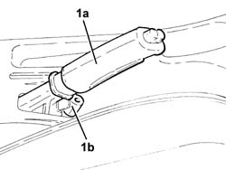
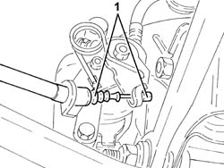
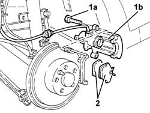
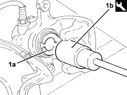

3310B64 rear brake pads - replace with wheels removed - including handbrake adjustment (if necessary)
- Path
- Procedures > 33 BRAKING SYSTEM > 3310 DISC BRAKES > 3310B REAR DISC BRAKES > 3310B64 rear brake pads - replace with wheels removed - including handbrake adjustment (if necessary)
- Kind
- repair procedure (removal / refitting; the operation number is the code)
- Applies to
- all engines; all production periods
- Interactive page
- https://sloeber94.github.io/elrnDB-a147/en/#/3025213
Applies to: all engines; all production periods
 Removing
Removing
 Refitting
RefittingRemove the handbrake boot.
1. Lift up the handbrake lever (1a) and loosen the nut (1b) adjusting the tension of the handbrake cables.

Applies to: all engines; all production periods
1. Disconnect the handbrake cables from the rear brake calipers.

Applies to: all engines; all production periods
1. Undo the bolts (1a) and move the rear brake calipers (1b) from their brackets.
2. Remove the rear brake pads.

Applies to: all engines; all production periods
Refitting
Removing1. Compress the rear brake caliper pistons (1a) using the tool (1b) to facilitate the fitting of the brake calipers.
 | Name | Country |
|---|---|---|
1b | Key | 1.822.108.000 |

Applies to: all engines; all production periods
Replace the rear brake calipers, complete with new pads, in their housings and tighten their bolts to the specified torque.
 | Fastening | Component | Ø | Value (daNm) |
|---|---|---|---|---|
- | Bolt | REAR BRAKE CALIPER | M10 | (Bracket side) 5.0 |
Connect the handbrake cables to the rear brake calipers.
Adjust the travel of the handbrake lever 3380A04 handbrake - check travel .